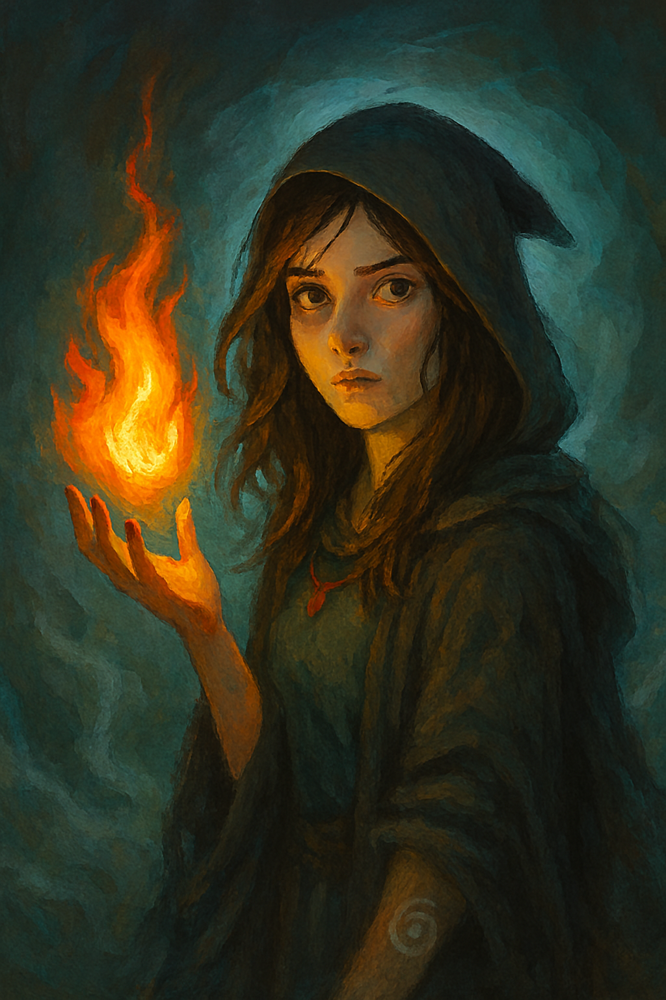

Kaelis and the Hollow Veil: Her First Real Test
Posted on November 10, 2025 · Category: TAOLB Universe Stories

She returned to the village, not as a girl, but as the Witch of the Hollow Veil. And the mist followed her, loyal and alive.
Learning the Feelers
Kaelis’s new gift of emotion feeling wasn’t just magic. It was presence. She could sense the flicker of doubt in a stranger’s heart, the buried grief in a tree’s roots, the quiet rage of a storm before it broke.
Her rituals grew sharper. Her spellcraft, more precise. But the real challenge was learning when to listen and when to shield. The Hollow Veil whispered constantly. Not all whispers were kind.
The Girl in the Grove
She met Nyari by accident. A child, no older than seven, sitting in a grove Kaelis had warded against memory. Nyari didn’t flinch when Kaelis approached. She asked questions. She laughed. She called the mist “fluffy.”
Kaelis tried to send her away. Nyari stayed. And when Kaelis cast a spell to erase the encounter, Nyari blinked and said, “That tickled.” The girl was immune. Or something more.
The Mind Battle
It started with a letter. A jealous witch named Sirell accused Kaelis of stealing his rituals, his students, his fame. Kaelis ignored it. The second letter arrived inside a dream.
Sirell attacked not with fire or curses, but with suggestion twisting Kaelis’s own emotion feelers against her. Kaelis nearly drowned in borrowed guilt and false memories.
But Nyari appeared in the dream, holding a mirror. Kaelis looked. She saw herself not as Sirell painted her, but as she truly was. The mist surged. The veil thickened. Sirell vanished.
Stronger Than Before
Kaelis woke with silver threads in her hair and a new mark on her palm: a spiral of mist. She could now cast without speaking. Suggest without touching.
Nyari was gone, but her laughter echoed in the trees. Kaelis didn’t chase it. She simply whispered, “Thank you.” The Hollow Veil stirred. It was listening.